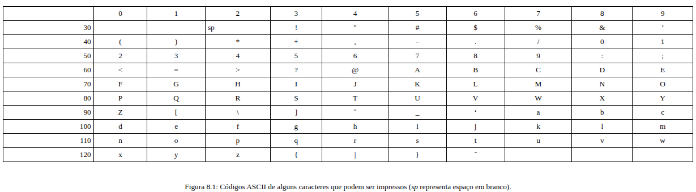
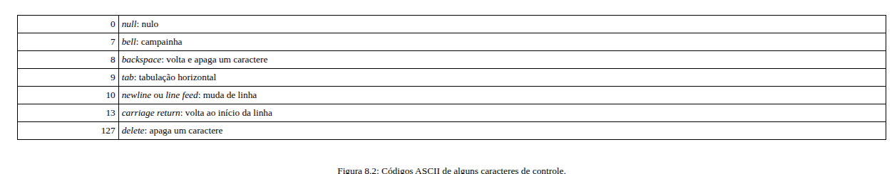

Cadeias de caracteres em C
Estas são as notas da sexta aula: como o C representa texto sem ter um tipo string dedicado, como ler e manipular essas cadeias de caracteres, e como organizá-las em vetores. Os exemplos interativos logo abaixo colocam parte dessa teoria em prática, passo a passo.
Cadeias de caracteres
O C não tem um tipo dedicado para texto. Em vez disso, uma cadeia de caracteres
(string) é construída a partir de duas peças já conhecidas — o tipo char e o vetor — mais
uma convenção: uma sequência de caracteres guardada num vetor, terminada por um caractere especial que
marca onde o texto acaba. É essa convenção, mais do que qualquer palavra-chave da linguagem, que
define o que é uma string em C.
Caracteres
Um char ocupa 1 byte e guarda, na prática, um pequeno número inteiro — o
código de um caractere numa tabela padronizada, quase sempre a tabela ASCII. Escrever
'A' no código é só uma forma legível de escrever o número 65; por isso operações
aritméticas funcionam normalmente sobre caracteres: 'a' + 1 vale 'b'
(código 98), e comparar caracteres com < ou > compara seus códigos,
o que coincide com a ordem alfabética para letras da mesma caixa.

Além dos caracteres imprimíveis, a tabela ASCII reserva códigos para caracteres de
controle, que não desenham nada na tela, mas comandam algo — o mais comum no dia a dia é o
'\n' (código 10, newline), que já apareceu em quase todo printf
deste curso.

'\0' (nulo) e o '\n' (nova linha).Cadeias de caracteres (strings)
Uma string em C é um vetor de char onde o último caractere de interesse é seguido por um
byte especial, o caractere nulo '\0' (código 0, visto na Figura 8.2) —
não um caractere visível, apenas uma marca de "fim da string". Toda função da biblioteca padrão que
trabalha com strings (printf com %s, strlen,
strcpy, e assim por diante) depende dessa convenção: ela varre o vetor byte a byte até
encontrar o '\0', e é isso, não o tamanho do vetor em si, que define onde a string
termina.
Leitura de caracteres e cadeias de caracteres
scanf("%c", ...) é diferente da maioria dos outros formatos: ele lê literalmente o
próximo caractere do buffer de entrada, sem pular espaços, tabulações ou quebras de linha antes
disso. Formatos como %d, %f e %s descartam automaticamente
qualquer espaço em branco pendente antes de começar a ler; %c (e %[...],
usado mais abaixo) não — por isso o único formato recomendado neste curso para ler
caractere a caractere é " %c", com um espaço explícito antes do
%c, nunca "%c" sozinho.
Essa diferença aparece com força em leituras em cascata — quando um
scanf vem logo depois de outro. O caso clássico:
scanf("%d", &idade); lê o número digitado, mas deixa no buffer o '\n'
correspondente à tecla Enter que o usuário apertou para confirmar — %d não consome
esse '\n', só o número antes dele. Se a próxima leitura for
scanf("%c", &letra);, ela não espera um novo caractere: captura imediatamente esse
'\n' que já estava esperando no buffer, e o programa segue com
letra = '\n', não com o que o usuário pretendia digitar em seguida. O espaço em
" %c" resolve exatamente isso: instrui o scanf a descartar toda a
sequência de espaços em branco pendente — '\n' incluso — antes de ler o caractere de
verdade. É a mesma lógica que o exemplo Cuidado com a quebra de linha usa entre a leitura
do caractere e a leitura da string seguinte.
Ler uma string inteira tem uma armadilha parecida: %s para no primeiro espaço em
branco, então não serve para ler uma frase; o formato %[^\n] — normalmente escrito como
" %99[^\n]", com um espaço antes e um limite de tamanho — lê tudo (inclusive espaços)
até o próximo '\n', sem incluí-lo.
Exemplos que manipulam cadeias de caracteres
A biblioteca string.h oferece funções prontas para as operações mais comuns:
strlen (tamanho, sem contar o '\0'), strcpy (copiar),
strcat (concatenar) e strcmp (comparar, caractere a caractere, devolvendo a
diferença entre os primeiros códigos que não coincidem — negativo, zero ou positivo). Todas elas
seguem a mesma ideia por baixo: um laço que avança por um vetor de char até encontrar o
'\0', fazendo algo a cada posição visitada — copiar, comparar, contar.
Cadeia de caracteres como estrutura recursiva
Há uma outra forma, equivalente, de enxergar uma string: recursivamente. Uma string é, ou a string
vazia (só o '\0'), ou um caractere seguido por uma string (o resto). É exatamente essa
ideia que um laço como while (str[length] != '\0') length++; expressa de forma
iterativa — a cada volta, o problema "qual o tamanho desta string?" vira "qual o tamanho do que
sobra depois deste caractere?", até sobrar só o '\0'.
Constante cadeia de caracteres
Um literal como "Rio" já é, por si só, uma constante do tipo vetor de char,
terminada em '\0' automaticamente pelo compilador — "Rio" ocupa 4 bytes
('R', 'i', 'o', '\0'), não 3. Vale notar a
diferença de aspas: 'R' (aspas simples) é uma constante char, um único
byte; "R" (aspas duplas) é uma constante string, um vetor de 2 bytes
('R' e '\0') — dois valores de tipos diferentes, apesar da aparência
parecida.
Vetor de cadeia de caracteres
Como cada string pode ter um tamanho diferente, um vetor de strings normalmente não é uma grade fixa
de caracteres, mas um vetor de ponteiros para char
(char *nomes[N];): cada posição do vetor guarda o endereço de uma string, e cada string
pode ter sido alocada de forma independente, com o tamanho exato de que precisa — é o padrão que o
exemplo Vetor de nomes de alunos usa, alocando dinamicamente uma cópia de cada nome lido e
guardando o ponteiro correspondente numa posição do vetor.
Parâmetros da função main
Até aqui, main sempre apareceu sem parâmetros — mas ela também pode ser declarada como
int main(int argc, char *argv[]), para receber o que foi digitado na linha de comando
junto com o nome do programa. argc (argument count) é a quantidade de
argumentos, incluindo o próprio nome do programa; argv (argument vector) é
exatamente um vetor de strings, uma para cada argumento — argv[0] é o nome do programa,
argv[1] o primeiro argumento digitado depois dele, e assim por diante. É assim que um
programa chamado como ./programa entrada.txt consegue descobrir, dentro de si mesmo,
que o texto "entrada.txt" foi passado como argumento.
O exemplo Argumentos de linha de comando, logo abaixo, coloca isso em prática: nenhum
scanf — os valores chegam prontos em argc/argv assim que
main começa a rodar, a partir do que foi digitado no terminal antes mesmo do programa
iniciar. Por isso ele precisa ser compilado (gcc main.c -o main) e executado passando
os argumentos direto na chamada (./main ola mundo), em vez de digitá-los depois que o
programa já começou.
Escolha um exemplo abaixo: para cada um você vê o código-fonte, uma explicação da mecânica central e a simulação da execução passo a passo — sem precisar compilar nada.
Exemplos
-
Cidade
Três formas equivalentes de construir a mesma string: atribuição caractere a caractere, lista de inicialização e literal.
-
Cuidado com a quebra de linha
Por que ler um caractere e depois uma string exige um espaço antes do especificador de formato.
-
Reimplementando funções de string
Versões próprias de strlen, strcpy, strcat e strcmp, para ver como cada uma varre a string até o '\0'.
-
Duplicar uma string
Aloca dinamicamente uma cópia independente de uma string, usando strlen e strcpy.
-
Vetor de nomes de alunos
Um vetor de ponteiros para string, cada nome alocado dinamicamente conforme é lido.
-
Argumentos de linha de comando
argc e argv chegando prontos em main, sem scanf — a partir do que foi digitado na própria chamada do programa.
Cidade
ver no GitHub ↗#include <stdio.h>
int main()
{
char city[4];
city[0] = 'R';
city[1] = 'i';
city[2] = 'o';
city[3] = '\0';
printf("%s\n", city);
char city2[] = {'R', 'i', 'o', '\0'};
printf("%s\n", city2);
char city3[] = "Rio";
printf("%s\n", city3);
return 0;
}Três formas, mesmo resultado
city, city2 e city3 chegam ao mesmo conteúdo — a string
"Rio" — por três caminhos diferentes: atribuição campo a campo, lista de
inicialização explícita, e um literal de string. Nos três casos, o que realmente importa não é
como o vetor foi preenchido, mas que ele termine em '\0'.
Execução passo a passo
Clique em “Próximo” para começar a simulação.
Saída no terminal
Rio Rio Rio
city tem exatamente 4 bytes — o mínimo necessário para "Rio" mais o
'\0'. Se o código tentasse escrever um quinto caractere (por exemplo,
city[4] = '!';), isso escreveria fora dos limites do vetor: um comportamento
indefinido que pode corromper outra variável ou travar o programa, sem que o compilador avise.
Se você quisesse guardar a palavra "Vitoria" (7 letras) do mesmo jeito que
city guarda "Rio", qual o tamanho mínimo que o vetor char
precisaria ter?
Certo! Toda string em C reserva uma posição extra para o '\0' — sem ela, nenhuma função de string saberia onde a palavra termina. 7 letras exigem 8 bytes, exatamente como "Rio" (3 letras) exige 4.
Não é isso. A resposta certa é 8: 7 bytes para as letras mais 1 para o '\0' — a mesma lógica que faz city[4] ter tamanho 4 para guardar "Rio" (3 letras).
Cuidado com a quebra de linha
ver no GitHub ↗#include <stdio.h>
int main()
{
char user_char;
printf("Please enter a character: ");
scanf(" %c", &user_char);
printf("You entered: %c\n", user_char);
char user_string[100];
printf("Please enter a string: ");
scanf(" %99[^\n]", user_string);
printf("You entered: %s\n", user_string);
return 0;
}O espaço que evita o problema
Quando o usuário digita um caractere e pressiona Enter, o '\n' do Enter fica
esperando no buffer de entrada. Sem o espaço antes de %c ou de
%[^\n], uma leitura seguinte capturaria esse '\n' pendente em vez de
esperar por uma nova entrada. O espaço em ambos os scanf deste exemplo instrui a
função a descartar qualquer espaço em branco (incluindo quebras de linha) antes de ler o que
interessa.
Execução passo a passo
Clique em “Próximo” para começar a simulação.
Saída no terminal
Please enter a character: A You entered: A Please enter a string: Hello World You entered: Hello World
scanf("%s", user_string); em vez de
%[^\n], o resultado seria diferente mesmo com o espaço: %s sempre para
no primeiro espaço em branco, então uma entrada como "Hello World" só capturaria
"Hello" — o %[^\n] é o que permite ler uma frase inteira, com espaços
internos.
Imagine que este fosse o primeiro comando do programa — não haveria nenhuma leitura
anterior, então nenhum '\n' pendente no buffer antes dele. Removendo o espaço de
scanf(" %c", &user_char);, o que mudaria nesse cenário específico?
Certo! O espaço em " %c" só importa quando há espaço em branco pendente no buffer — geralmente o '\n' deixado por uma leitura anterior. Sendo a primeira leitura do programa, o buffer está vazio, então o comportamento seria o mesmo com ou sem o espaço.
Não é isso. O espaço só tem efeito quando existe algo pendente no buffer para descartar — normalmente um '\n' de uma leitura anterior. Sendo esta a primeira leitura do programa, não haveria nada pendente, então o resultado seria idêntico com ou sem o espaço.
Reimplementando funções de string
ver no GitHub ↗#include <stdio.h>
#include <string.h>
// Function to calculate the length of a string (analogous to strlen)
int my_strlen(const char *str)
{
int length = 0;
while (str[length] != '\0')
length++;
return length;
}
// Function to copy one string to another (analogous to strcpy)
void my_strcpy(char *dest, const char *src)
{
int i = 0;
while (src[i] != '\0')
{
dest[i] = src[i];
i++;
}
dest[i] = '\0'; // Null-terminate the destination string
}
// Function to concatenate two strings (analogous to strcat)
void my_strcat(char *dest, const char *src)
{
int dest_len = my_strlen(dest);
int i = 0;
while (src[i] != '\0')
{
dest[dest_len + i] = src[i];
i++;
}
dest[dest_len + i] = '\0'; // Null-terminate the concatenated string
}
// Function to compare two strings (analogous to strcmp)
int my_strcmp(const char *str1, const char *str2)
{
int i;
for (i = 0; str1[i] != '\0' && str2[i] != '\0'; ++i)
{
int d = str1[i] - str2[i];
if (d != 0)
return d;
}
return (str1[i] - str2[i]);
}
int main(void)
{
char str1[50] = "Hello, ";
char str2[] = "World!";
// my_strlen
int length = my_strlen(str1);
// int length = strlen(str1);
printf("Length of str1: %d\n", length);
// my_strcpy
my_strcpy(str1, str2);
// strcpy(str1, str2);
printf("Copied string: %s\n", str1);
// my_strcat
char str3[50] = "Hello, ";
my_strcat(str3, str2);
// strcat(str3, str2);
printf("Concatenated string: %s\n", str3);
// my_strcmp
int result = my_strcmp("apple", "banana");
// int result = strcmp("apple", "banana");
if (result == 0)
printf("Strings are equal\n");
else if (result < 0)
printf("str1 is less than str2\n");
else
printf("str1 is greater than str2\n");
return 0;
}O mesmo padrão, quatro vezes
my_strlen, my_strcpy, my_strcat e my_strcmp
reimplementam, de propósito, quatro funções que já existem prontas em string.h — a
ideia não é substituí-las, mas expor o mecanismo comum por trás delas: um laço que varre um
vetor de char posição a posição, parando quando encontra '\0'.
Execução passo a passo
Clique em “Próximo” para começar a simulação.
Saída no terminal
Length of str1: 7 Copied string: World! Concatenated string: Hello, World! str1 is less than str2
my_strcmp devolve a diferença bruta entre os dois códigos ASCII que primeiro
divergem (aqui, 'a' - 'b' = -1), não um valor fixo como -1,
0 ou 1 — é exatamente assim que a strcmp real da
biblioteca padrão se comporta. O que importa para quem chama é só o sinal do
resultado, não seu valor exato.
O for de my_strcmp repete enquanto str1[i] != '\0' &&
str2[i] != '\0'. Se as cadeias comparadas fossem "apple" e
"applepie" — uma prefixo exata da outra — o que aconteceria quando i
chegasse a 5?
Certo! Assim que str1[5] é '\0', a condição do for já fica falsa e o laço termina — sem nunca acessar str1[6]. A linha final (return str1[i] - str2[i];) então compara '\0' com 'p', um valor negativo, indicando corretamente que "apple" vem antes de "applepie".
Não é isso. O && garante que o laço pare assim que qualquer uma das duas strings chegar ao '\0' — aqui, str1[5]. A linha de retorno fora do laço então compara '\0' com 'p', um valor negativo, sem nunca ler além do fim de str1.
Duplicar uma string
ver no GitHub ↗#include <stdio.h>
#include <stdlib.h>
#include <string.h>
// Function to duplicate a string
char *duplicate(char *src)
{
int n = strlen(src) + 1; // Add one for the '\0' character
char *dest = (char *)malloc(n * sizeof(char));
if (dest == NULL)
{
perror("Memory allocation failed");
exit(1);
}
strcpy(dest, src);
return dest;
}
int main(void)
{
char original[] = "Hello, World!";
char *copied;
// Duplicate the string
copied = duplicate(original);
// Print the original and copied strings
printf("Original string: %s\n", original);
printf("Copied string: %s\n", copied);
// Remember to free the memory allocated by duplicate
free(copied);
return 0;
}strlen decide o tamanho do malloc
n = strlen(src) + 1 é o padrão de sempre para alocar uma string: strlen
não conta o '\0', então o +1 reserva espaço para ele.
strcpy(dest, src) então copia os caracteres, incluindo o '\0' final,
para o bloco recém-alocado.
Execução passo a passo
Clique em “Próximo” para começar a simulação.
Saída no terminal
Original string: Hello, World! Copied string: Hello, World!
duplicate aloca memória com malloc mas não a libera antes de
retornar, a responsabilidade de chamar free passa para quem usa o valor devolvido —
é main, não duplicate, quem libera copied. Esquecer essa
responsabilidade é a forma mais comum de vazamento de memória com esse padrão.
Se a checagem if (dest == NULL) fosse removida do código, e malloc
realmente falhasse (devolvendo NULL, algo raro mas possível quando a memória
disponível se esgota), o que aconteceria na linha seguinte, strcpy(dest, src);?
Certo! Um ponteiro NULL não aponta para nenhum endereço válido; strcpy não tem como saber disso sozinho e tentaria escrever ali mesmo, causando comportamento indefinido — daí a importância de checar o retorno de malloc antes de usá-lo.
Não é isso. Sem a checagem, strcpy tentaria escrever através de um ponteiro NULL, que não aponta para memória válida nenhuma — comportamento indefinido, tipicamente um crash. É exatamente esse risco que if (dest == NULL) evita.
Vetor de nomes de alunos
ver no GitHub ↗#include <stdio.h>
#include <stdlib.h>
#include <string.h>
#define MAX_NAME_LENGTH 100
#define NUM_STUDENTS 5
// Function to duplicate a string
char *duplicate_string(const char *s)
{
char *d = (char *)malloc(strlen(s) + 1);
if (d == NULL)
{
perror("memory_allocation_failed");
exit(EXIT_FAILURE);
}
strcpy(d, s);
return d;
}
int main()
{
char *student_names[NUM_STUDENTS];
printf("Enter names of %d students:\n", NUM_STUDENTS);
for (int i = 0; i < NUM_STUDENTS; i++)
{
char input[MAX_NAME_LENGTH];
printf("Student %d: ", i + 1);
if (scanf(" %99[^\n]", input) != 1)
{
printf("error_reading_input\n");
return 1;
}
// // Read student name
// scanf(" %99[^\n]", input);
// Duplicate and store the name
student_names[i] = duplicate_string(input);
}
printf("\nEntered names of students:\n");
for (int i = 0; i < NUM_STUDENTS; i++)
{
printf("Student_%d: %s\n", i + 1, student_names[i]);
free(student_names[i]); // Free memory for each name
}
return 0;
}Um vetor de ponteiros, não de caracteres
student_names é um vetor de 5 ponteiros para char — não uma
grade fixa de caracteres. Cada posição é preenchida separadamente, com
duplicate_string alocando exatamente o espaço necessário para aquele nome em
particular, nem mais nem menos.
Execução passo a passo — Ana, Bruno, Carla, Diego, Elisa
Clique em “Próximo” para começar a simulação.
Saída no terminal
Enter names of 5 students: Student 1: Ana Student 2: Bruno Student 3: Carla Student 4: Diego Student 5: Elisa Entered names of students: Student_1: Ana Student_2: Bruno Student_3: Carla Student_4: Diego Student_5: Elisa
student_names em si tem tamanho fixo (5) e vive na
pilha, mas cada uma das 5 strings que ele aponta foi alocada individualmente no heap, em tempos
diferentes. Por isso o laço final precisa liberar cada nome com free(student_names[i]);
— liberar só o vetor de ponteiros (que nem foi alocado dinamicamente) não devolveria a memória
das strings.
Se student_names tivesse sido declarado como uma grade fixa,
char student_names[NUM_STUDENTS][MAX_NAME_LENGTH];, em vez de um vetor de
ponteiros, qual seria a principal diferença de uso de memória?
Certo! Uma grade char[N][M] reserva M bytes para cada linha, não importa o tamanho real do nome — "Ana" ocuparia o mesmo espaço que um nome de 90 caracteres. O vetor de ponteiros deste exemplo aloca, via duplicate_string, exatamente strlen(nome) + 1 bytes para cada um, sem desperdício.
Não é isso. A diferença central é o desperdício: a grade fixa reservaria MAX_NAME_LENGTH bytes por aluno, não importa o tamanho real do nome, enquanto o vetor de ponteiros aloca sob medida para cada string com duplicate_string.
Argumentos de linha de comando
ver no GitHub ↗#include <stdio.h>
int main(int argc, char *argv[])
{
printf("Numero de argumentos (argc): %d\n", argc);
for (int i = 0; i < argc; i++)
{
printf("argv[%d] = \"%s\"\n", i, argv[i]);
}
return 0;
}Argumentos chegam prontos — não é scanf
Diferente de todos os outros exemplos deste módulo, este programa não lê nada durante a
execução: os valores de argc e argv já chegam preenchidos pelo sistema
operacional assim que main começa a rodar, a partir do que foi digitado na linha de
comando antes do programa iniciar — não há nenhum scanf aqui.
Para reproduzir a simulação abaixo, compile com gcc main.c -o main e execute
passando os argumentos direto na chamada, ./main ola mundo — não digitados depois
que o programa já começou.
Execução passo a passo — ./main ola mundo
Clique em “Próximo” para começar a simulação.
Saída no terminal
$ gcc main.c -o main $ ./main ola mundo Numero de argumentos (argc): 3 argv[0] = "./main" argv[1] = "ola" argv[2] = "mundo"
argv guarda, na verdade, argc + 1 posições: a convenção do C
garante que argv[argc] é sempre um ponteiro NULL, mesmo esse programa
nunca acessando essa posição. É esse ponteiro extra — mais do que o próprio argc —
que outras funções da família exec (fora do escopo deste curso) usam para descobrir
onde o vetor termina.
Se o programa fosse executado apenas como ./main, sem nenhum argumento extra,
quais seriam os valores de argc e argv[0]?
Certo! argv[0] é sempre o nome usado para chamar o programa, esteja ele sozinho ou acompanhado de outros argumentos — por isso argc nunca é menor que 1 numa execução normal.
Não é isso. argc conta o próprio nome do programa como o primeiro argumento — argv[0]. Rodando só ./main, sem nada depois, argc vale 1 e argv[0] é "./main".